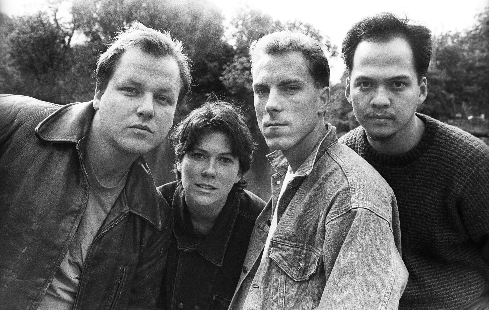
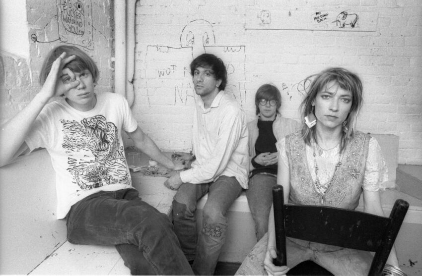
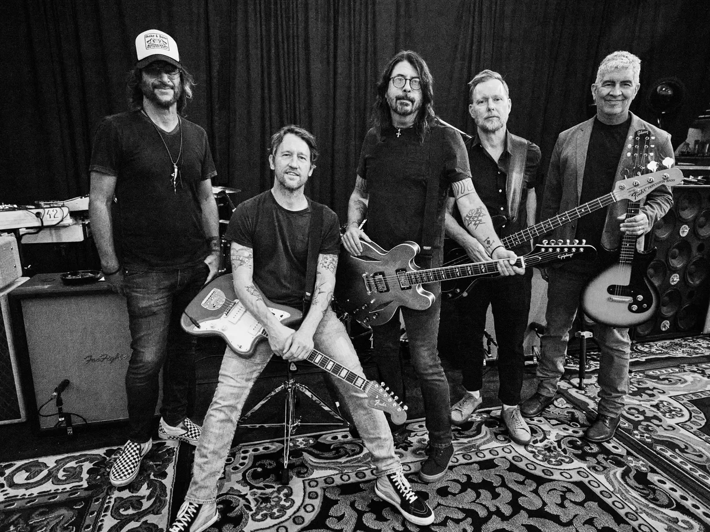
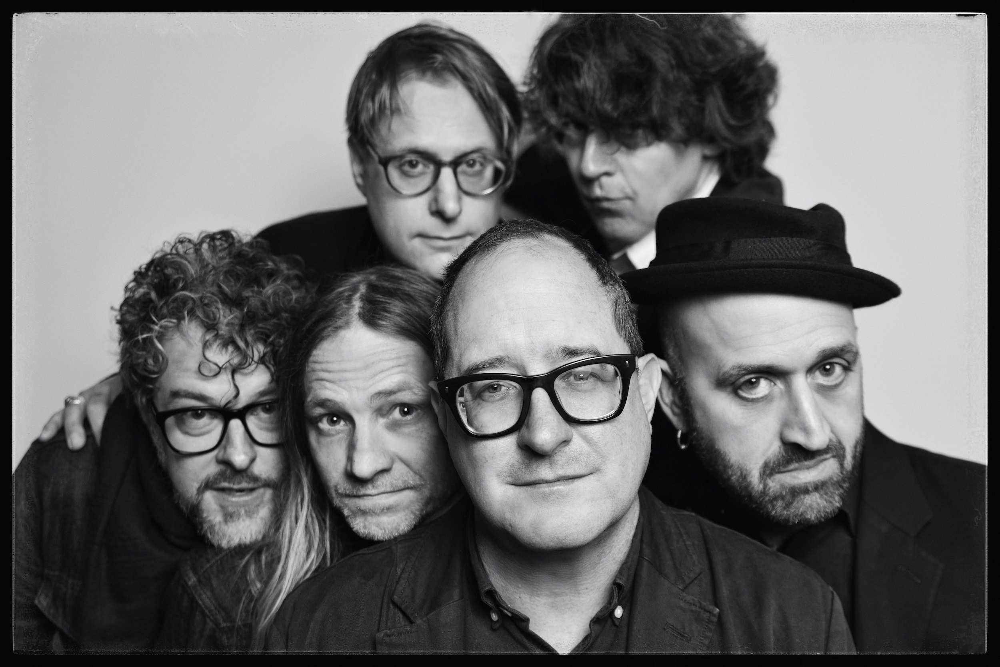
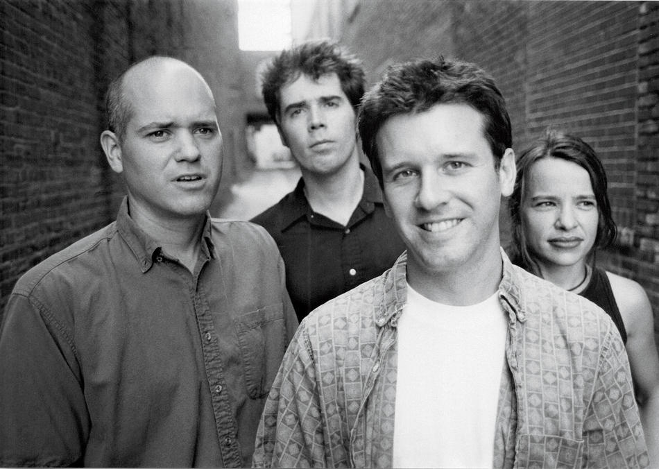

The Lasting Legacy of Hüsker Dü
Though together for only eight years, their influence on alternative rock, indie music, and punk continues to resonate decades after their breakup.
Direct Musical Influences
Bands directly citing Hüsker Dü as major influence:
Nirvana

Pixies

Sonic Youth
Dinosaur Jr.

Foo Fighters

The Hold Steady

Superchunk
Cloud Nothings
Critical Recognition
Rolling Stone listed 'Zen Arcade' as one of the 500 Greatest Albums of All Time. Pitchfork regularly features multiple albums in best-of decade lists. Spin Magazine named them one of the most influential bands of the 1980s.
Musical Innovations
Loud-Quiet Dynamics • Melodic Hardcore • Double Album Ambition • Alternative Rock Blueprint • Emo Precursors